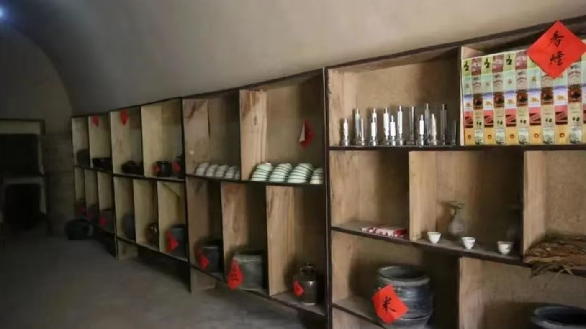
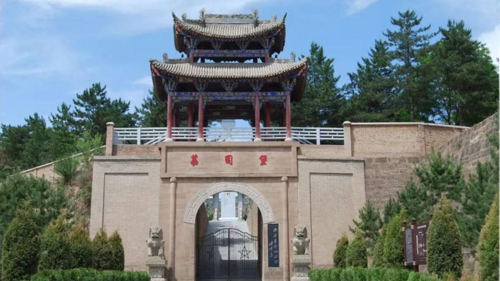

甘肃 · 华池 · 南梁 1934—1935
塬上有灯
南梁，一个根据地的日常
把“两点一存”的结论，还原成一间教室、一张布告、一条暗线、一片塬，和一盏今天还亮着的灯。
向下滚动 ↓
一九三四年 · 列宁小学
46 个孩子第一次走进学堂。教室是借来的三孔窑洞，黑板是一块石板，粉笔是白垩土搓的条。
为什么是南梁
土地革命战争后期，全国硕果仅存的完整革命根据地
1935 年，南方各根据地相继丧失，唯有以南梁为中心的陕甘革命根据地屹立未倒。它因此成为党中央和各路红军长征的落脚点，也成为八路军奔赴抗日前线的出发点——党史上概括为“两点一存”。
落脚点
1935 年 9 月，红军在哈达铺从邮政代办所的报纸上得知陕北仍有根据地；10 月 19 日到达吴起镇，长征有了“家”。
出发点
1937 年 8 月，陕甘宁地区红军主力改编为八路军，从这片土地出发，奔赴抗日前线。
硕果仅存
到 1935 年初，根据地东至宜川、西到定边、南接耀县、北迄靖边，纵横数百里，设有 53 个苏维埃县（市）。
资料来源：陕西日报《从“陕甘星火”到“两点一存”》，形势政策网 2021-07-06 转载。
塬上五记 · 一条线
不写“伟大”，先写怎么过日子
一个赤贫、闭塞、鸦片泛滥的山区，两年里长出了政权、学校、合作社和交通站。五章各取一件实物、一个地点、一群人，连起来就是 1931 到今天的一条线。

46 个孩子，一坑白垩土粉笔
三孔窑洞、3 个教学班、3 名教员；没有粉笔就烧锅底灰，没有课本就自己编。
进入这一章 →
“六劝”贴在墙上，也落在日子里
禁烟、禁赌、放脚三个委员会，加上“十大政策”，一个新政权开始管一个社会。
进入这一章 →
柜台后面，是 42 条人命
粮食、布匹、药品从山间岔道一段段转运；阎洼子一坑物资，42 个人没有说出一个字。
进入这一章 →
镢头和课本，同时出现在塬上
大凤川开荒、抗大七分校 5200 多人挖窑洞；先有粮食和干部，才有后来的一切。
进入这一章 →
九十余年，教室还亮着
列宁小学办成九年寄宿制学校，抗大七分校走成陆军边海防学院——灯没有熄。
进入这一章 →一九三四年五月 · 阎洼子
一坑没被挖走的物资，换来 42 条人命。他们中间，有人只是没开口。
“我说陕北是两点，一个落脚点，一个出发点。”毛泽东，党的七大
留下名字的，只有几个
阎洼子 · 一九三四年五月
42 个人里，我们只查到这四个名字。
其余的人没有留下名字，只留下一盏灯。